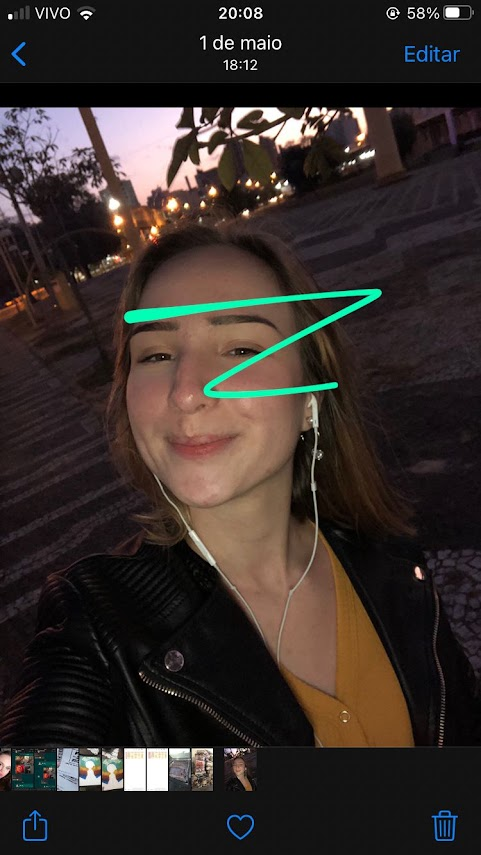
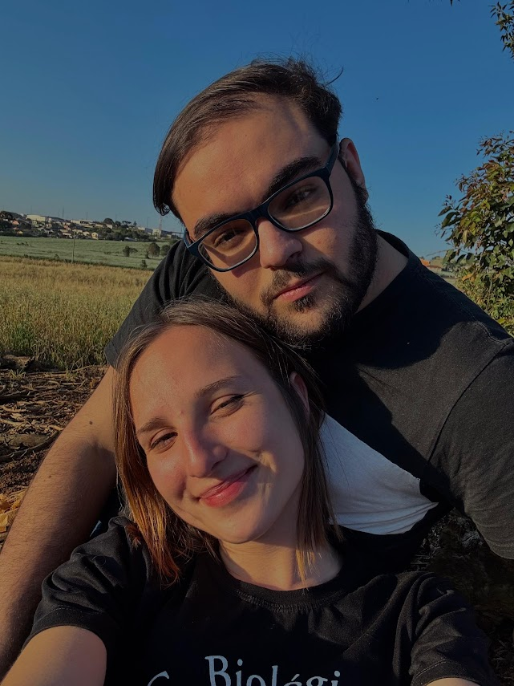
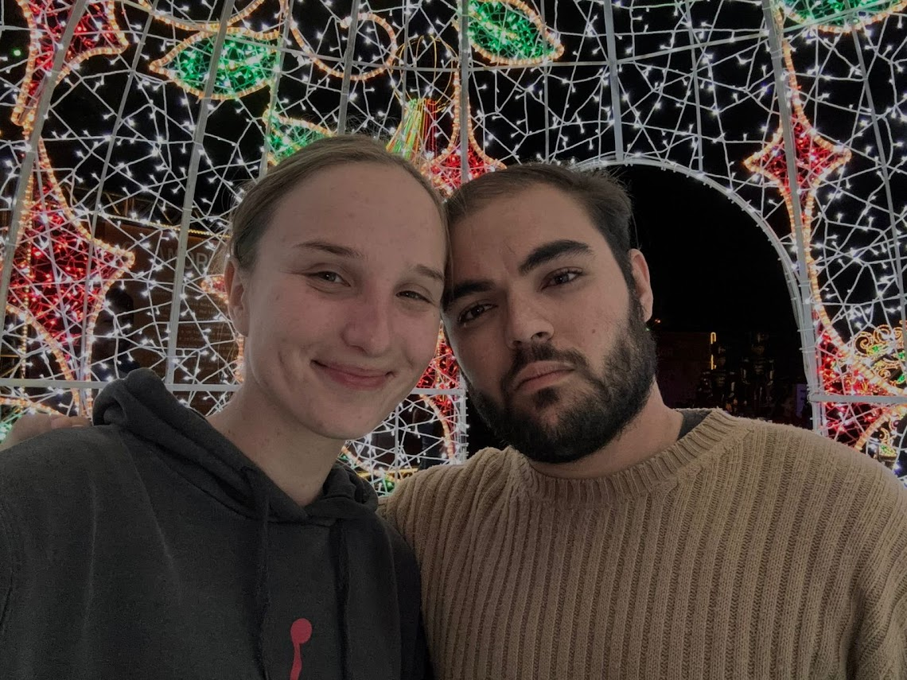

Hoje é o dia da Srta. Giovanna Krutsch, essa moça incrível, inteligente, companheira, fiel e amorosa.
Fazem mais de 5 anos que nos encontramos pela primeira vez e recebi essa foto tua, mal sabia eu que inúmeros momentos e histórias aconteceriam.

Pouco mais de 3 anos depois de nos conhecermos que lembramos de tirar nossa primeira foto juntos, e caramba, já fazem mais de 2 anos dessa kkkkk.

Meses depois dessa foto, tiramos outra, nossa ultima foto aparecendo juntos, o dia que me senti feliz por ter visto o tanto que confia em mim, a ponto de me procurar em um momento tão difícil, um dia de risadas, de boas conversas, e talvez o dia do provável nosso último beijo kkk.

Bom, no fim o que quero dizer é que já se foram mais de 5 anos, com momentos registrados por foto, mensagens ou simplesmente por momentos guardados em nossa mente, e eu sou muito grato por ter tido nesses 5 anos alguém tão especial quanto você, então hoje o parabéns é seu, mas também o meu muito obrigado por tudo que a gente já viveu e quem sabe ainda viveremos, o nosso passado é cheio de momentos que nos pegaram de surpresa, sentimentos fortes, emoções a flor da pele, momentos felizes e tristes, mas o mais importante, ele é cheio do respeito que temos um pelo outro, e eu sou muito feliz por isso, já o futuro, ele é incerto, não sabemos o que virá quanto a nós, mas quanto a você, eu sei que serás uma excelente profissional, continuará sendo uma grande amiga para quem tiver esse prazer de te ter como amiga e também uma excelente filha, neta, prima, sobrinha, enfim, continuará sendo essa pessoa incrível que tu és.
Parabéns por ser você Giovanna, por cativar com teu sorriso, por encantar com o brilho dos seus olhos ao falar das coisas que ama, por causar interesse ao ficar toda empolgada falando sobre biologia, livros, teorias estranhas e/ou filmes/séries que tu gosta, eu espero do fundo do meu coração que você tenha uma vida de sucesso, consiga alcançar sonhos na sua carreira e na vida pessoal, que conheça os lugares que almeja, que tenha pessoas incríveis ao seu lado, e que principalmente, nunca perca o brilho dos seus olhos e do seu sorriso, porque sinceramente, há coisas na vida que a gente pode mudar uma rota e alcançar de outra forma, mas essa leveza que você traz no olhar e no sorriso, não é algo que se encontra durante a vida, é algo que vem da sua alma, é algo que nasceu com você, e eu espero que isso nunca saia de você.